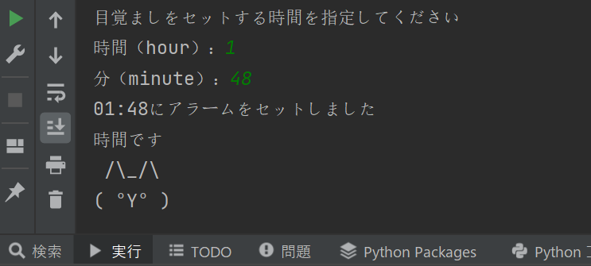

時間になると猫の顔文字と猫の声が出てくるアラーム
- import pygame.mixer
- import schedule
- import time
- #アラーム処理
- def Alarm():
- print("時間です")
- import miao
- miao.Meow()
- Sound()
- exit() #これがないと無限ループになるので注意
- #音再生処理
- def Sound():
- pygame.mixer.init() #初期化
- pygame.mixer.music.load('cat.mp3') #読み込み
- pygame.mixer.music.play(-1) #ループ再生（引数を1にすると1回のみ再生）
- input()
- pygame.mixer.music.stop() #終了
- #目覚まし設定時間取得
- print("目覚ましをセットする時間を指定してください")
- hour = input("時間（hour）：")
- minute = input("分（minute）：")
- target = f"{hour.zfill(2)}:{minute.zfill(2)}"
- print(target+"にアラームをセットしました")
- #アラーム時間設定
- schedule.every().day.at(target).do(Alarm)
- #アラーム待ち
- while True:
- schedule.run_pending()
- time.sleep(1)
実行の画面

参考リンク
- 猫の顔文字の外部ライブラリ
- アラームのソースコード
- 猫の声（cat1a.mp3）
ホームページに戻る:
- デザイン演習Ⅰ・Ⅱトップページ
- XBPトップページ